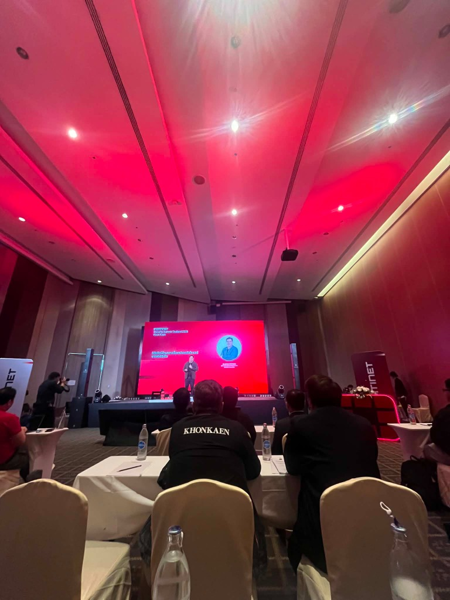
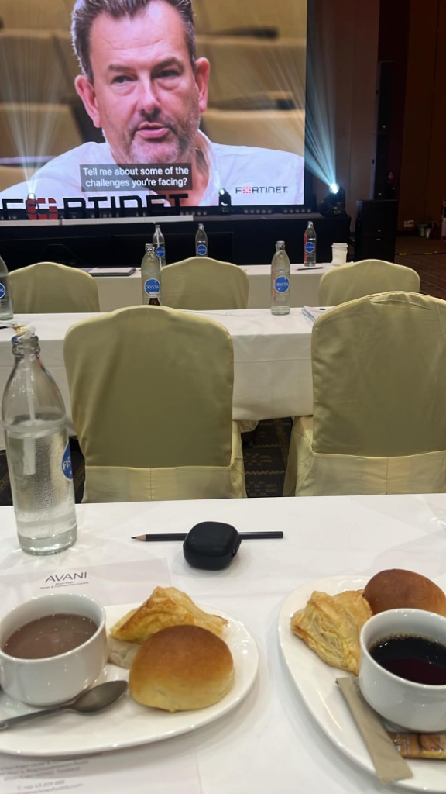
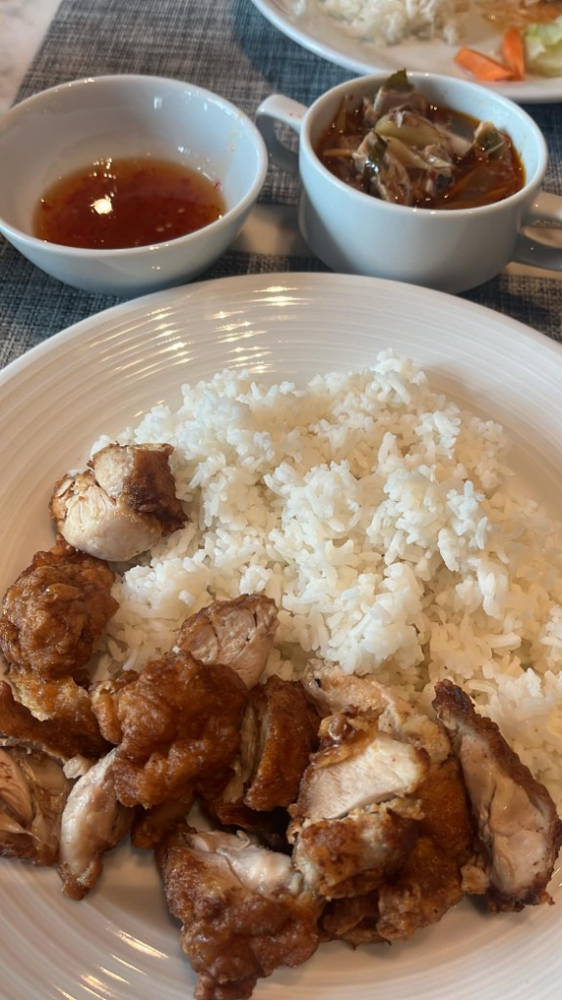

โครงงาน: ระบบแดชบอร์ดประเมินและติดตามความปลอดภัยทางไซเบอร์ มหาวิทยาลัยขอนแก่น (KKU Security Scorecard & Vulnerability Management Dashboard)
ความเป็นมาและความสำคัญ: เครือข่าย มข. มีขนาดใหญ่ครอบคลุมกว่า 21 คณะ/หน่วยงาน เผชิญความเสี่ยงทางไซเบอร์สูง เช่น การละเลยการ Patch อุปกรณ์, DNS Spoofing และมัลแวร์ เดิมขาดเครื่องมือศูนย์กลางในการประเมินภาพรวมความปลอดภัย
วัตถุประสงค์: พัฒนาระบบประเมิน Security Scorecard แบบเรียลไทม์, สร้างแผนที่ Interactive Campus Map แสดงเกรดความปลอดภัย (A-F) รายคณะ, รองรับการนำเข้าข้อมูลทั้ง API และ CSV Manual Import พร้อมเข้ารหัสลับ API Key ด้วย AES-256-GCM
| วัน เวลา สถานที่: | วันพุธที่ 22 กรกฎาคม 2026 เวลา 09:00 - 16:15 น. ณ ห้องประชุม อวานี คอนเวนชั่น 1 โรงแรมอวานี ขอนแก่น |
| วิทยากรผู้ทรงคุณวุฒิ: |
1. ดร. ศุภกร กังพิศดาร (ผู้จัดการประจำประเทศไทยและลาว ฟอร์ติเน็ต ประเทศไทย) 2. ดร. กิตติ์ เธียรธโนปจัย (ผู้ช่วยอธิการบดีฝ่ายดิจิทัล มหาวิทยาลัยขอนแก่น) 3. ผศ.นพ.ไพฑูรย์ ประภิณวณิชตร (ผู้อำนวยการศูนย์บริหารจัดการทรัพย์สิน มหาวิทยาลัยขอนแก่น) 4. ดร. รัฐติพงษ์ พุทธเจริญ (ผอ. ฝ่ายวิศวกรรมระบบ ฟอร์ติเน็ต ประเทศไทย - ผู้ดำเนินรายการ) |


